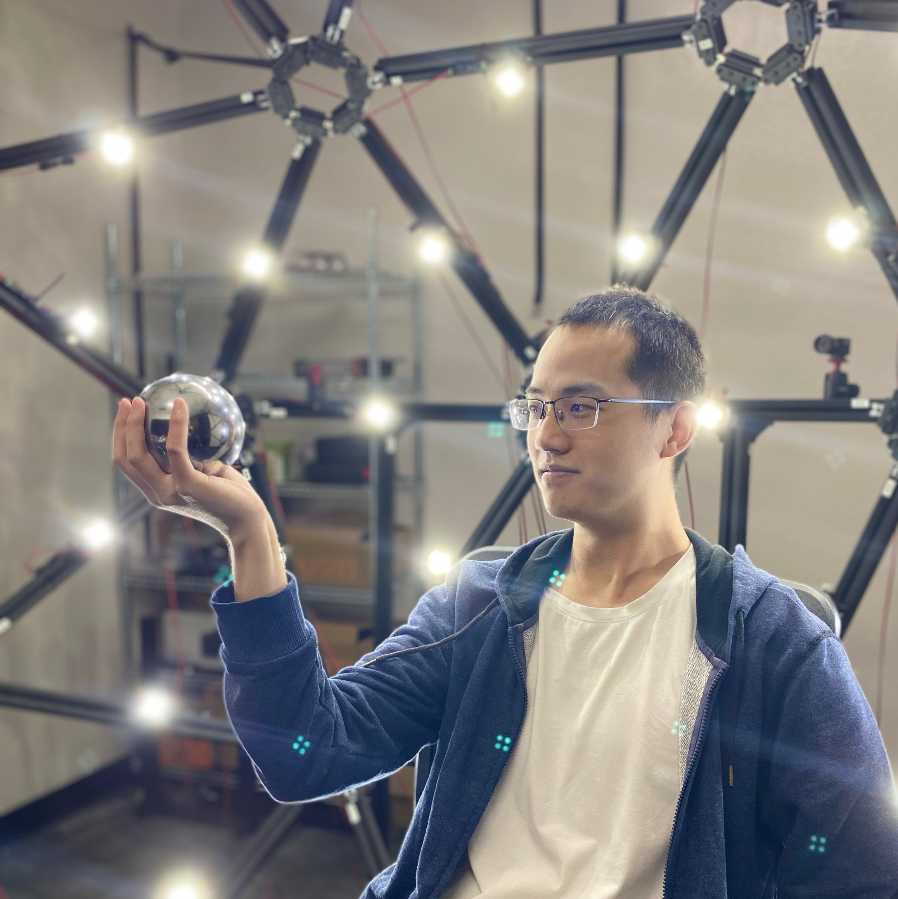
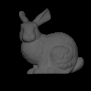
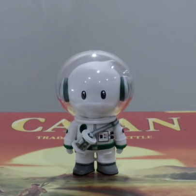
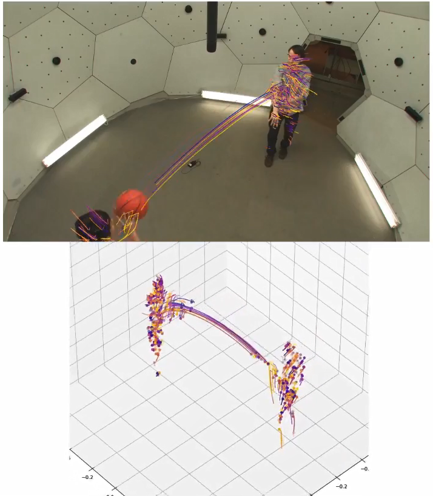
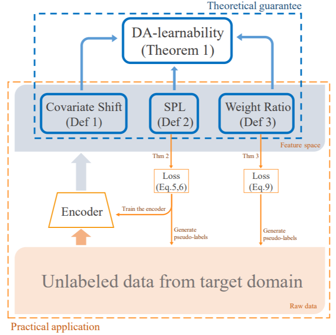
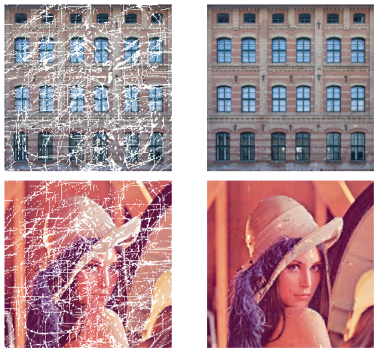
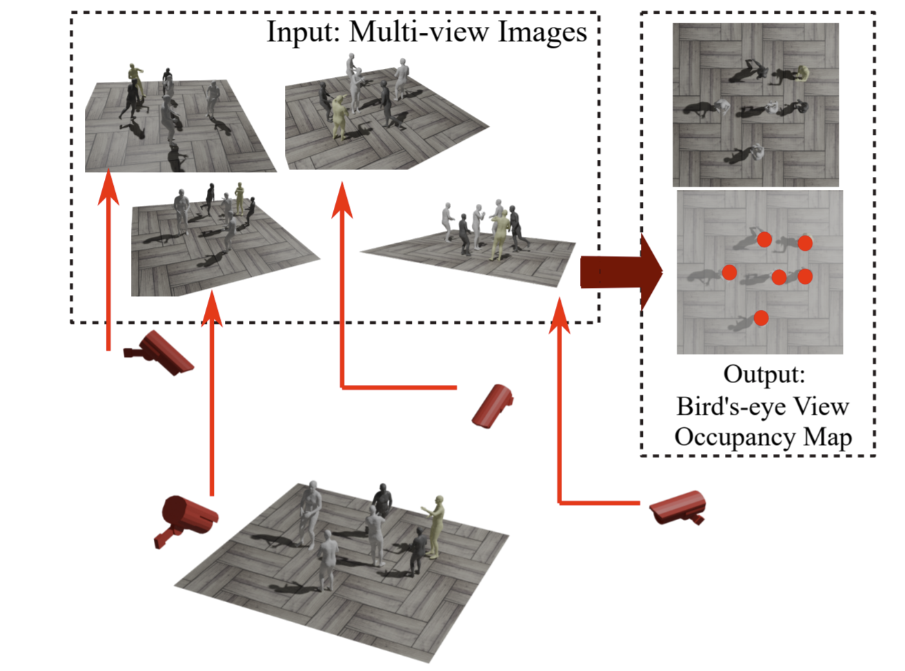
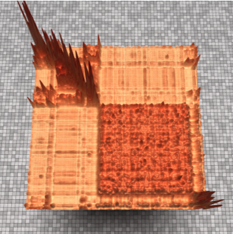

|  | Liangchen Song |
| Hi there! I am a third-year Ph.D. student from University at Buffalo, advised by Prof. Junsong Yuan. | |
|
Email: lsong8 at buffalo.edu Links: Github / dblp / Google scholar |
Projects
|  | Photometric stereo for dynamic scenes
|
|

|
Neural 4D Light Field Rendering
|
Selected (three/five) Publications
(* indicates equal contribution)
|  | PREF: Predictability Regularized Neural Motion Fields.
Liangchen Song, Xuan Gong, Benjamin Planche, Meng Zheng, David Doermann, Junsong Yuan, Terrence Chen, and Ziyan Wu. ECCV 2022 (oral) |
|  | Unsupervised domain adaptive re-identification: Theory and practice.
Liangchen Song*, Cheng Wang*, Lefei Zhang, Bo Du, Qian Zhang, Chang Huang, and Xinggang Wang. Pattern Recognition 2020 (3rd most cited PR 2020 paper)# My first work after learning deep learning. Got rejected by almost all 'top' AI conferences. |
|  | Nonlocal patch based t-SVD for image inpainting: algorithm and error analysis.
Liangchen Song, Bo Du, Lefei Zhang, Liangpei Zhang, Jia Wu, and Xuelong Li. # No networks involved. First objective function, then optimizing it. |
| PREF: Predictability Regularized Neural Motion Fields.
Liangchen Song, Xuan Gong, Benjamin Planche, Meng Zheng, David Doermann, Junsong Yuan, Terrence Chen, and Ziyan Wu. ECCV 2022 (oral)# Implicitly representing the patterns of motion. |
|
|  | Stacked Homography Transformations for Multi-View Pedestrian Detection.
Liangchen Song, Jialian Wu, Ming Yang, Qian Zhang, Yuan Li, and Junsong Yuan. ICCV 2021 (oral)# Sometimes I cannot believe this is an oral paper. |
|  | Rethinking Soft Labels for Knowledge Distillation: A Bias-Variance Tradeoff Perspective.
Helong Zhou*, Liangchen Song*, Jiajie Chen*, Ye Zhou, Guoli Wang, Junsong Yuan, and Qian Zhang. ICLR 2021# Writing is important. |
| Unsupervised domain adaptive re-identification: Theory and practice.
Liangchen Song*, Cheng Wang*, Lefei Zhang, Bo Du, Qian Zhang, Chang Huang, and Xinggang Wang. Pattern Recognition 2020 (3rd most cited PR 2020 paper)# My first work after learning deep learning. Got rejected by almost all 'top' AI conferences. |
|
| Nonlocal patch based t-SVD for image inpainting: algorithm and error analysis.
Liangchen Song, Bo Du, Lefei Zhang, Liangpei Zhang, Jia Wu, and Xuelong Li. # No networks involved. First objective function, then optimizing it. |
# Implicitly representing the patterns of motion.